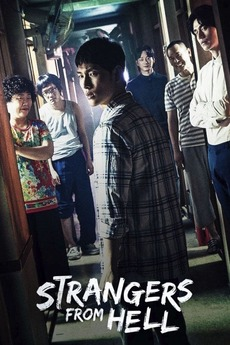

Strangers from Hell is a psychological thriller set in a cheap, eerie boarding
house where a young man slowly realizes that his neighbors are dangerously abnormal.
The drama is praised for its tightly controlled atmosphere, unsettling tone, and
strong visual direction that turns ordinary spaces into something deeply disturbing.
Lee Chang-hee’s direction is often highlighted for building tension through silence,
framing, and claustrophobic composition rather than relying on jump scares.
Strangers from Hell is a psychological thriller Korean drama that masterfully explores fear, paranoia, isolation, and the darkness hidden within human nature. Based on the popular webtoon Hell Is Other People, the drama follows the story of a young man who moves to Seoul in search of a better future but finds himself trapped in a terrifying environment. Unlike conventional horror dramas that rely heavily on supernatural elements, Strangers from Hell creates fear through realistic situations, disturbing characters, and psychological tension. The result is a chilling and unforgettable viewing experience that keeps audiences on edge from beginning to end.
The story centers on Yoon Jong-woo, an aspiring writer who moves to Seoul after receiving a job opportunity. Due to financial difficulties, he rents a room in a cheap and rundown residence known as Eden Studio. At first, the building appears strange but manageable. However, Jong-woo soon realizes that the residents are far from ordinary. The people living around him display increasingly disturbing behavior, making him feel uncomfortable and unsafe. As the story progresses, his fear and suspicion grow, leading him into a psychological nightmare where he struggles to distinguish reality from paranoia. The drama effectively captures the feeling of being trapped in an environment where danger seems to exist everywhere.
One of the greatest strengths of Strangers from Hell is its atmosphere. From the very first episode, the drama creates a sense of unease through its dark visuals, narrow hallways, dim lighting, and unsettling sound design. The cramped living conditions of Eden Studio symbolize the protagonist's growing sense of entrapment and helplessness. Every scene is carefully designed to make viewers feel uncomfortable, mirroring the emotions experienced by Jong-woo. The suspense builds gradually, allowing fear to grow naturally rather than relying on sudden scares.
The performances of the cast are exceptional. Im Si-wan delivers a powerful performance as Yoon Jong-woo, portraying his transformation from an ordinary young man into someone consumed by fear and psychological stress. His emotional journey feels realistic and deeply engaging. Equally impressive is Lee Dong-wook, who plays the mysterious dentist Seo Moon-jo. His calm demeanor, unsettling smile, and unpredictable behavior make him one of the most memorable villains in Korean drama history. Every scene featuring Moon-jo is filled with tension, leaving viewers uncertain about what he might do next.
The supporting characters are another highlight of the drama. Each resident of Eden Studio possesses unique and disturbing characteristics that contribute to the overall horror. Rather than relying on supernatural monsters, the drama presents ordinary people whose behavior becomes increasingly frightening. This realistic approach makes the horror more effective because it feels possible and believable. The residents serve as representations of the hidden darkness that can exist within society, reinforcing the drama's central themes.
A key theme explored in Strangers from Hell is the impact of environment on human behavior. The drama raises questions about whether people are born evil or shaped by their surroundings. As Jong-woo spends more time in Eden Studio, his mental state begins to deteriorate. The story examines how loneliness, stress, fear, and constant exposure to violence can affect a person's mind. These psychological elements elevate the drama beyond a simple horror story and encourage viewers to think about deeper social and philosophical issues.
The pacing of the series is carefully structured. Rather than revealing all its secrets immediately, the drama slowly uncovers the truth behind the residents and their actions. This gradual progression keeps viewers engaged and increases the suspense with each episode. Every new revelation adds another layer of mystery and tension, making it difficult to stop watching. The unpredictable nature of the plot ensures that audiences remain invested until the final episode.
The cinematography deserves special praise for its ability to create a haunting atmosphere. Dark color palettes, confined spaces, and creative camera angles contribute to the feeling of claustrophobia and psychological pressure. The sound design is equally effective, using silence, ambient noises, and subtle background music to maintain tension throughout the series. Together, these elements create a deeply immersive experience that enhances the drama's psychological horror.
One of the reasons Strangers from Hell stands out among thriller dramas is its realism. The horror does not come from ghosts or supernatural forces but from human beings and the frightening possibilities of human nature. This approach makes the story more disturbing because it feels grounded in reality. The drama forces viewers to confront uncomfortable truths about isolation, violence, and the influence people can have on one another.
In conclusion, Strangers from Hell is a brilliant psychological thriller that successfully combines horror, suspense, and character study. Its gripping storyline, outstanding performances, unsettling atmosphere, and thought-provoking themes make it one of the most memorable Korean thrillers ever produced. The drama explores the darker aspects of human psychology while maintaining intense suspense from beginning to end. Although it may not be suitable for viewers who prefer lighthearted entertainment, it is a masterpiece for fans of psychological horror and suspense.trangers from Hell is one of the most disturbing and psychologically intense Korean dramas ever created. Based on the webtoon Hell Is Other People, the series presents a terrifying exploration of fear, loneliness, and the darkness hidden within ordinary people. Unlike traditional horror dramas that depend on supernatural creatures or jump scares, Strangers from Hell creates terror through psychological manipulation, unsettling characters, and an atmosphere of constant dread. The drama follows Yoon Jong-woo, a young man who moves to Seoul to pursue his dreams and start a new chapter in life. Due to financial difficulties, he rents a room in a cheap residence called Eden Studio. What initially appears to be an uncomfortable but manageable living situation gradually turns into a nightmare as he realizes that the people living around him are far more dangerous than they seem. From the first episode, the drama creates a sense of unease that continues to intensify until its shocking conclusion.
One of the most remarkable aspects of the series is its ability to make viewers feel trapped alongside the protagonist. Eden Studio is not just a setting; it becomes a character in itself. The narrow hallways, dim lighting, stained walls, and cramped rooms create a suffocating atmosphere that reflects Jong-woo’s deteriorating mental state. Every corner of the building feels threatening, and even the smallest sounds become sources of anxiety. The directors use visual storytelling brilliantly to make the audience experience the same paranoia and discomfort that consume the protagonist. As Jong-woo becomes increasingly isolated and suspicious, viewers are drawn deeper into his psychological struggle, making the horror feel personal and immersive.
The drama's greatest strength lies in its characters. Yoon Jong-woo begins as an ordinary young man trying to adjust to life in a big city. He dreams of becoming a successful writer and hopes for a brighter future, but the pressures of work, financial struggles, and his unsettling surroundings gradually wear him down. His transformation throughout the series is both fascinating and heartbreaking to watch. The audience witnesses how fear and isolation slowly affect his mind, causing him to question both himself and the people around him. His journey is not simply about surviving physical danger but also about maintaining his sanity in an environment designed to break him.
Among the many unforgettable characters, Seo Moon-jo stands out as one of the most chilling villains in Korean drama history. Played brilliantly by Lee Dong-wook, Moon-jo is a dentist whose calm demeanor and polite behavior hide something deeply disturbing. He rarely raises his voice or behaves aggressively, yet his presence alone creates tension. His conversations with Jong-woo are filled with psychological manipulation and subtle threats that leave viewers feeling uneasy. Moon-jo represents pure psychological horror because he understands how to influence people and exploit their weaknesses. His fascination with Jong-woo forms the emotional core of the series and drives much of the narrative forward.
The supporting residents of Eden Studio are equally terrifying. Each person possesses unique characteristics that make them memorable and disturbing. They appear strange from the beginning, but as the story unfolds, their true natures become increasingly horrifying. What makes these characters effective is that they feel believable rather than exaggerated. They are not monsters from a fantasy world; they are ordinary-looking individuals whose actions reveal the darkness hidden beneath the surface. This realism makes the drama far more frightening than many conventional horror series.
A major theme explored throughout Strangers from Hell is the influence of environment on human behavior. The drama constantly raises questions about whether people are born evil or become evil because of their circumstances. As Jong-woo spends more time in Eden Studio, he is exposed to violence, manipulation, and fear on a daily basis. The story suggests that prolonged exposure to such an environment can change a person's thoughts and actions. This psychological depth elevates the drama beyond simple horror and transforms it into a study of human nature. The audience is encouraged to reflect on how loneliness, stress, and isolation can affect an individual's mind.
Another important theme is urban loneliness. Although Jong-woo moves to Seoul hoping for success and opportunity, he finds himself more isolated than ever. Despite being surrounded by people, he feels completely alone. His coworkers misunderstand him, his personal relationships become strained, and no one seems willing to believe his concerns. This sense of alienation contributes significantly to the drama's emotional impact. It highlights the difficulties many people face when adapting to new environments and emphasizes how loneliness can make individuals vulnerable to manipulation and psychological distress.
The cinematography and sound design play crucial roles in building suspense. The drama uses dark color palettes, tight framing, and uncomfortable camera angles to create a constant sense of tension. Scenes often feel claustrophobic, making viewers feel trapped alongside the protagonist. The soundtrack is used sparingly, allowing silence and ambient sounds to heighten the suspense. Footsteps in a hallway, a door creaking open, or distant voices become sources of anxiety because the audience never knows what might happen next. These technical elements work together to create an atmosphere that is both haunting and unforgettable.
One of the reasons Strangers from Hell is so effective is its unpredictability. The story constantly keeps viewers guessing about the intentions of the characters and the direction of the plot. Every episode reveals new information that changes the audience's understanding of events. The suspense builds gradually rather than relying on sudden shocks, making the psychological horror far more impactful. By the time the story reaches its climax, the tension has become almost unbearable, leading to a conclusion that is both shocking and thought-provoking.
The ending of the drama is particularly memorable because it leaves room for interpretation. Rather than providing simple answers, it encourages viewers to think deeply about the events they have witnessed. The conclusion raises important questions about identity, morality, and the effects of prolonged psychological trauma. Different viewers may interpret the ending in different ways, which has led to extensive discussions among fans. This ambiguity adds another layer of complexity to an already sophisticated narrative.
In conclusion, Strangers from Hell is a masterpiece of psychological horror that stands apart from typical thriller dramas. Its gripping storyline, exceptional performances, unforgettable characters, and deeply unsettling atmosphere combine to create a truly unique viewing experience. The drama explores complex themes such as loneliness, fear, manipulation, and the darkness within human nature while maintaining intense suspense throughout its run. It challenges viewers not only to fear the characters on screen but also to reflect on the circumstances that shape human behavior. Long after the final episode ends, the images, themes, and emotions of Strangers from Hell continue to linger in the mind, proving why it is considered one of the greatest psychological thrillers in Korean television history. For fans of dark, intelligent, and emotionally intense storytelling, Strangers from Hell is an unforgettable drama that deserves its reputation as a modern masterpiece.
Critically, it is considered one of the most effective Korean psychological horror-thrillers, especially for its consistent mood and strong central performance. However, some critics and viewers note that the story becomes increasingly surreal and symbolic toward the end, which may feel confusing or unsatisfying if a clear explanation is expected. The ambiguity is intentional, but it divides opinion—some see it as artistic, others as unresolved.
Overall, it stands out as a disturbing exploration of isolation, sanity, and hidden violence in everyday life, making it one of the more memorable entries in modern K-thriller television.
Rating: ★★★★★ (4/5)